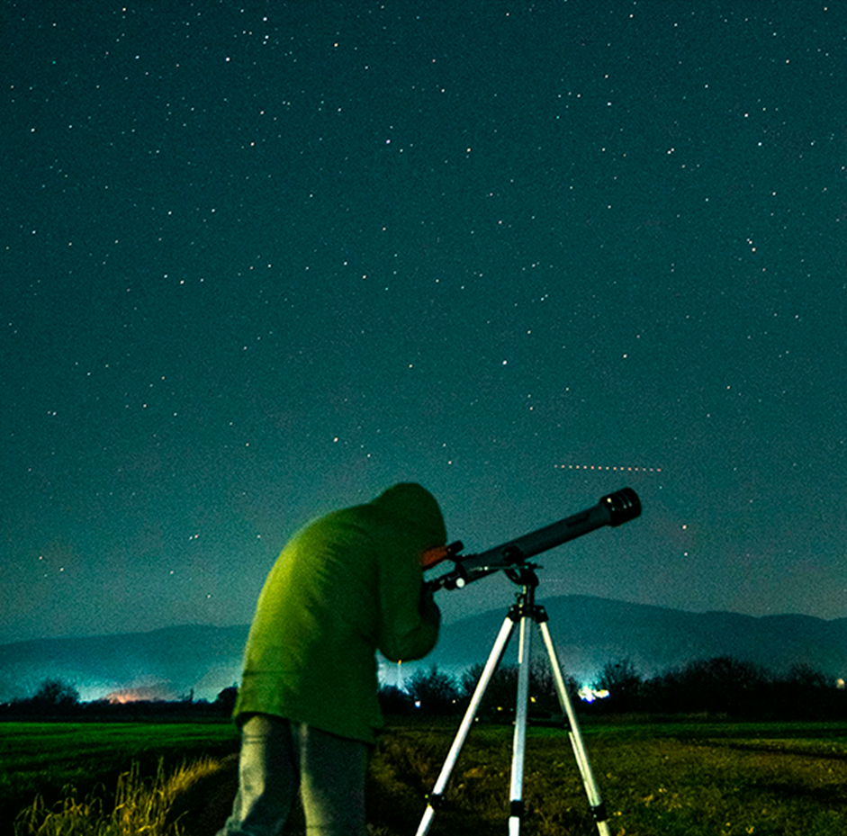
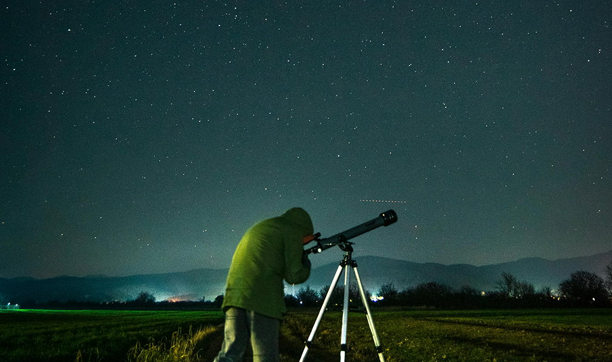
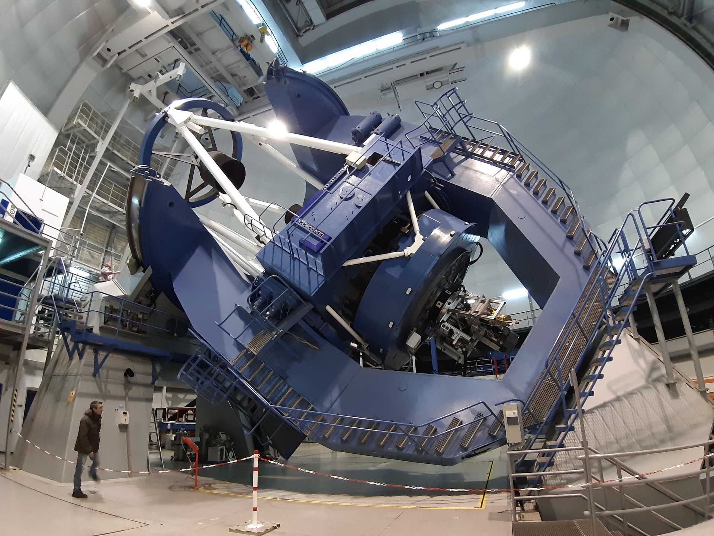
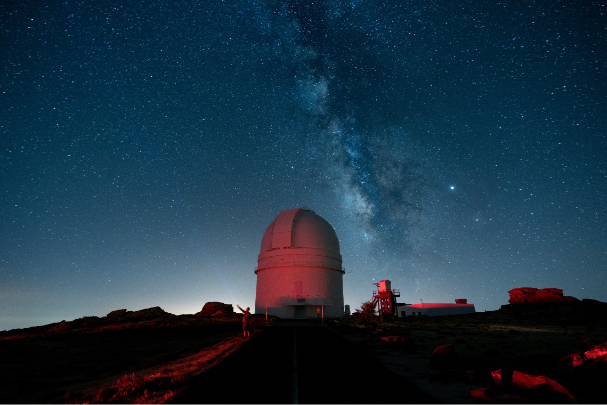

Observacion de la via lactea
Descripción
Un viaje astronómico dedicado a la observación de la Vía Láctea en uno de los observatorios más
importantes de España. Dos días y una noche.
En esta experiencia, el destino estará centrado en el descubrimiento de la galaxia y la observación
del cielo profundo desde el Observatorio de Calar Alto, situado en la Sierra de Los Filabres,
en Almería. Gracias a su elevada altitud y a la baja contaminación lumínica de la zona, este
observatorio ofrece unas condiciones excepcionales para contemplar la Vía Láctea con gran claridad.
Durante el viaje se aprenderá cómo se forma nuestra galaxia, cómo identificar sus principales regiones visibles y cuál es la posición del sistema solar dentro de ella. Las actividades estarán guiadas por especialistas en astronomía, quienes explicarán el funcionamiento de los telescopios profesionales y las investigaciones científicas realizadas en Calar Alto.
La experiencia incluirá observaciones nocturnas del cielo mediante telescopios de gran precisión, permitiendo contemplar cúmulos estelares, nebulosas y el núcleo visible de la Vía Láctea en condiciones ideales. También se abordará la importancia de la protección de los cielos oscuros y el papel de Calar Alto en la investigación astronómica europea.
Estadía en : alojamiento rural cercano al Observatorio de Calar Alto, situado en plena Sierra de Los Filabres y preparado para actividades astronómicas nocturnas.
Precio del viaje : 340 € por persona. Incluye transporte ida y vuelta, una noche de alojamiento, desayuno, visita guiada al observatorio, observación astronómica nocturna y actividades educativas relacionadas con la Vía Láctea y el cielo profundo.
Descubre más sobre los pioneros en el espacio
El Observatorio de Calar Alto alberga algunos de los telescopios más grandes del continente europeo y está situado a más de 2.000 metros de altitud, lo que permite disfrutar de uno de los cielos más oscuros y estables de la península ibérica.
Itinerario
Día 1 - Llegada a la Sierra de Los Filabres
Instalación y visita al Observatorio de Calar Alto · 15:00 - 20:00
La experiencia comienza con la llegada a la Sierra de Los Filabres, en Almería, donde los viajeros se alojarán en un alojamiento rural cercano al Observatorio de Calar Alto, rodeado de naturaleza y preparado para actividades astronómicas nocturnas.
Por la tarde se realizará una primera visita guiada al observatorio, uno de los centros astronómicos más importantes de España y Europa. Durante la actividad se explicará cómo trabajan los astrónomos profesionales, el funcionamiento de los telescopios de investigación y el papel de Calar Alto en el estudio del universo y la protección de los cielos oscuros.

Día 1 - Noche - Observación de la Vía Láctea y cielo profundo
Sesión astronómica guiada · 21:30 - 02:00
La noche estará dedicada a la observación de la Vía Láctea desde uno de los cielos más limpios de la península. Gracias a la elevada altitud del observatorio y a la baja contaminación lumínica de la zona, será posible contemplar el núcleo visible de nuestra galaxia con gran claridad.
Guiados por especialistas en astronomía, los viajeros aprenderán cómo se forma la galaxia, dónde se encuentra el sistema solar dentro de ella y cómo identificar regiones visibles de la Vía Láctea. También se observarán nebulosas, cúmulos estelares y otros objetos del cielo profundo mediante telescopios de gran precisión.

Día 2 -Naturaleza, astronomía y regreso
Desayuno y cierre de la experiencia · 08:30 - 14:00
La mañana comenzará con el desayuno en el alojamiento rural y tiempo libre para disfrutar del paisaje natural de la Sierra de Los Filabres antes del regreso.
Posteriormente se realizará una breve actividad final centrada en las investigaciones científicas desarrolladas en Calar Alto y el impacto de la astronomía moderna en el estudio de las galaxias. Finalmente, se efectuará el traslado de vuelta, concluyendo la experiencia astronómica.


Nota importante: Los programas descritos son susceptibles de cambios por razones puntuales ajenas a nuestra organización, tales como condiciones meteorológicas o de seguridad.
Observaciones
- Si alguien tiene alergia o intolerancia a algún tipo de alimento deberá comunicarlo a la agencia para prever incidentes inesperados que cundan el panico.
- Si alguien tiene algún tipo de enfermedad que afecte a la respiración, resistencia o movimiento, deberá comunicarlo a la agencia para prever una mayor seguridad y adaptación.
- Si traen menores de edad o acompañan a personas con necesidades especiales, manténganse pendientes de ellos y no se separen en ningún momento. Recuerden presentárselos a los guías e informarles de todo lo necesario que deban tener en cuenta.
- Cualquier siniestro sucedido durante el viaje o emergencia médica será responsabilidad económica de la propia persona afectada. Los costes correrán por cuenta del viajero. Se le acompañará o transportará a la zona de asistencia médica más cercana y, si es posible, el grupo continuará su recorrido.Si el viajero se recupera a tiempo para el regreso, será reincorporado al viaje. En caso de que no sea posible, deberá ponerse en contacto con sus familiares, amigos u otras personas de confianza para poder regresar a su hogar cuando esté recuperado.
Gastos de anulación según fecha de salida
| HASTA | IMPORTE |
|---|---|
| Más de dos meses de anticipación | 0% |
| Un mes de anticipación | 40% |
| Una semana de anticipación | 80% |
| El dia del viaje | 100% |
Conforme más se acerque a la fecha de salida el importe que se le quitara a su viaje sera mayor.
El precio incluye
- Alojamiento completo
- Guía especializado
- Billete de avión
- Excursiones nocturnas
El precio no incluye
- Transporte interno
- Comidas y cenas
- Seguro opcional
- Gastos personales
Preguntas frecuentes
Aprende mas sobre tu viaje, no te pierdas nada.
El Observatorio de Calar Alto está situado a gran altitud y en una zona con muy baja contaminación lumínica, lo que permite disfrutar de cielos extremadamente oscuros y claros, ideales para observar la galaxia y el cielo profundo.
Durante la sesión se podrán observar regiones visibles de la Vía Láctea, nebulosas, cúmulos estelares y diferentes objetos astronómicos mediante telescopios profesionales.
La observación de cielo profundo se centra en objetos mucho más lejanos del universo, como nebulosas, galaxias y cúmulos estelares, visibles gracias a telescopios de gran precisión y cielos oscuros.
Sí. Debido a la altitud de la Sierra de Los Filabres, las temperaturas pueden descender bastante durante la noche. Se recomienda llevar ropa de abrigo y calzado cómodo.
Sí. La observación astronómica necesita cielos despejados para realizarse correctamente. Si el clima no permite la observación, se ofrecerán actividades alternativas relacionadas con astronomía y divulgación científica.